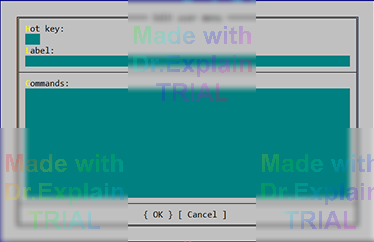

5. Запуск программного обеспечения
5.1 Добавление пункта в меню Far Manager
Для быстрого запуска ПОАСК можно создать пункт в пользовательском меню Far:
- Нажмите F9 и выберите Commands → Edit User Menu.
- В группе Main menu нажмите Insert.
-
В поле «Command» укажите полный путь к исполняемому файлу
mkfw.exeили используйте относительный, например:
..\MKF_EXE\mkfw.exe - Задайте понятное название (например — «ПОАСК») и сохраните изменения.

5.2 Запуск из Windows
Варианты запуска из графической среды (ярлык на рабочем столе, закрепление в меню «Пуск», автоматический запуск и др.) приведены во [11, п. 1.3].